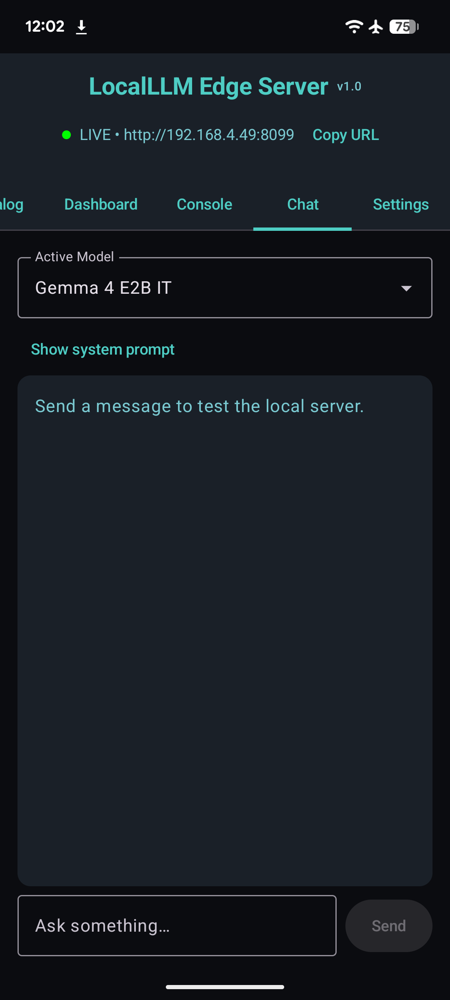
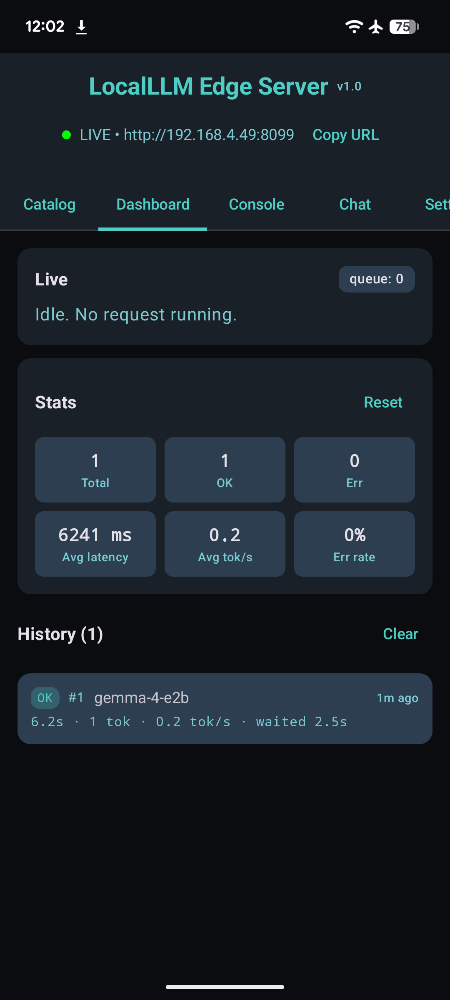
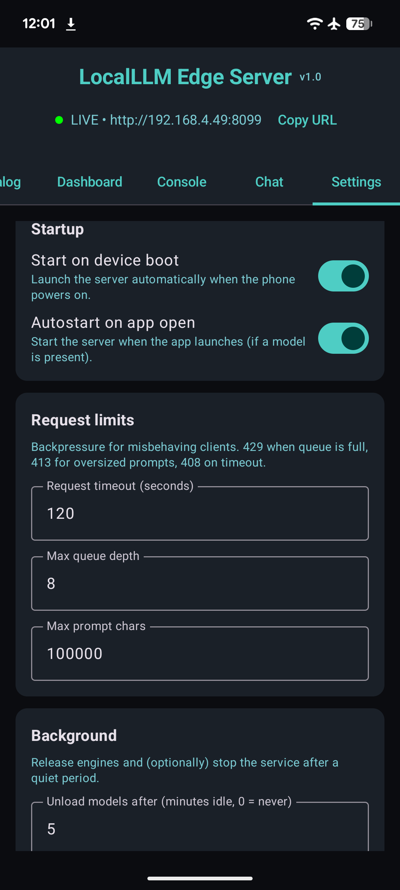

LocalLLM Edge Server¶
An on-device, OpenAI-compatible LLM HTTP server for Android. Runs Gemma 4 locally on the phone via Google's LiteRT-LM runtime, exposes the OpenAI Chat Completions API on a configurable port — no cloud, no remote API key, no data leaves the device.
-
Open-API drop-in
Any OpenAI client library can talk to it. Streaming SSE,
session_id-based KV cache reuse, per-requesttemperature/top_k/max_tokens— all wire-compatible withPOST /v1/chat/completions. -
LiteRT-LM, not MediaPipe
Loads
.litertlmbundles viacom.google.ai.edge.litertlm:litertlm-android:0.11.0— Google's successor runtime to MediaPipetasks-genai. AUTO backend tries GPU first, falls back to CPU if the OpenCL/OpenGL delegate can't initialize on the device. -
Production-leaning Android app
Foreground service with
specialUsedeclaration, SHA-256 download verification, signed-bearer-token API key, partial wake-lock under inference, idle-eviction of GB-sized engines, atomic queue cap with429 Retry-After, SSE error chunks (no silent drops). -
Hackable
~2k lines of Kotlin + Compose on top of Ktor 3. Single Gradle module, single test target, CI gating with GitHub Actions. New catalog entries are one struct + a SHA-256.
What it looks like¶




Quick demo¶
# 1. Install
adb install -r app-debug.apk
# 2. Open the app, tap "Download" on Gemma 4 E2B IT (~2.6 GB)
# The server autostarts once a model is on disk.
# 3. Forward the port to your laptop (or use the LAN IP from the app header)
adb forward tcp:8099 tcp:8099
# 4. Send a request — exactly the same shape as OpenAI's API
curl http://localhost:8099/v1/chat/completions \
-H "Content-Type: application/json" \
-d '{
"model": "gemma-4-e2b",
"messages": [{"role": "user", "content": "Say hi in one word."}]
}'
# → {"choices":[{"finish_reason":"stop","index":0,"message":{"content":"Hi.","role":"assistant"}}],...}
Why this exists¶
The MediaPipe tasks-genai Android library doesn't ship Gemma 4 support
— Google split on-device delivery onto LiteRT-LM. This app is the
glue: takes any .litertlm bundle from
litert-community, wraps it
in the public LiteRT-LM runtime, and exposes it as a local HTTP server
so every app on the device (or every device on your LAN) can use the
same model without each one shipping a 2.6 GB binary.
It's the same idea as running Ollama on a laptop, except the daemon runs in your pocket.
License¶
Apache 2.0. The Gemma model weights themselves are governed by Google's Gemma Terms of Use.